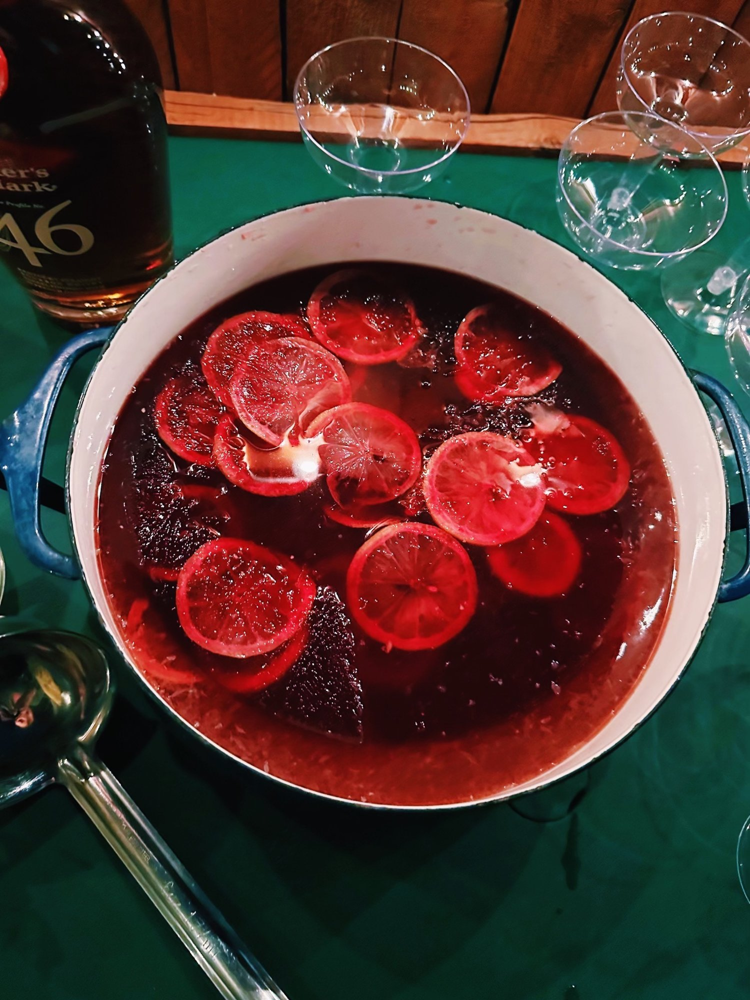

New York Sour Punch

Description
The New York Sour is one of my favorite classic cocktails. It’s tart, refreshing, easy to drink and easier to make. Typically made one at a time to preserve the classy and festive red wine float, I would simply never make one cocktail at a time, so punch is my preference for large gatherings. For the red wine ice, pick something you’d want to drink, but nothing too pricey– you’re diluting it with water and freezing it, so a lot of the nuance of a more “special” bottle will be sacrificed.
Ingredients
- 1 cup dry red wine
- 1 cup water
- 1/2 lemon, thinly sliced
- 1/2 cup sugar
- 1/2 cup water
- 1 cup bourbon
Steps
- Combine red wine and water in a 9" cake pan. Add lemon slices and freeze until solid, at least 8 hours.
- Bring sugar and water to a boil in a small saucepan, stirring to dissolve sugar. Let cool.
- Combine syrup, bourbon, and lemon juice in a large pitcher.
- Scrape red wine ice with a fork to create shaved ice and add to pitcher.
- Stir to combine and serve in glasses over ice.
Home